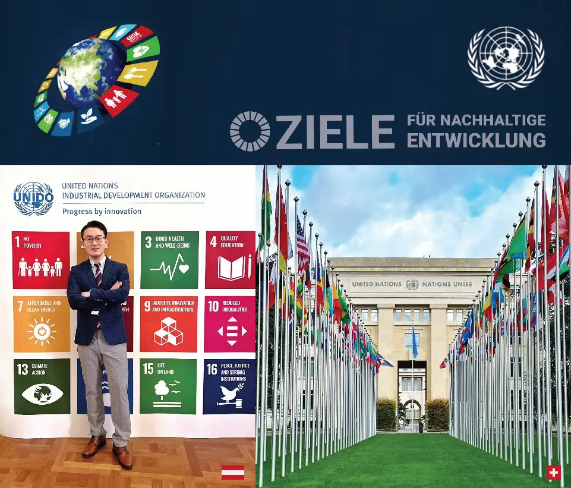
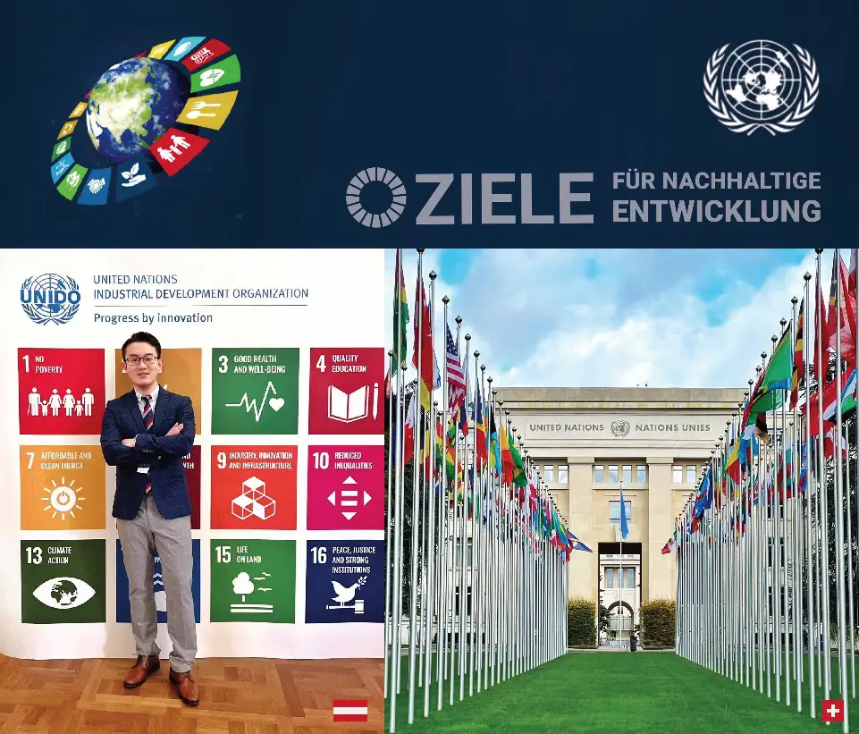

Energie treibt die menschliche Zivilisation an, und Energiematerialien bewältigen die Herausforderungen der Energiesicherheit und des Klimawandels, wodurch die radikale, KI-gesteuerte industrielle Revolution katalysiert wird. Am Zusammenspiel von Innovation–Integration–Intelligenz widmet sich Dr. Hong Xu der Weiterentwicklung kritischer Materialien für E-Powersysteme und Anwendungen in intelligenten Netzen, einschließlich Solarzellen, Lithium-Ionen-Batterien, Elektrolyseuren und Wasserstoff-Brennstoffzellen.
Durch die Reform funktionaler Materialien und Gerätearchitekturen verbessert seine Arbeit die Energieeffizienz, die Materialhaltbarkeit und die Skalierbarkeit vom Labor zum Markt für nachhaltige Energiesysteme. Seine Bemühungen wurden mit Publikationen und Patenten (erteilt/eingereicht) im Bereich der grünen Transformation in Zusammenarbeit mit globalen Institutionen gewürdigt. Besonders hervorzuheben ist seine systematische Arbeit in der Röntgentomographie zur Untersuchung von Brennstoffzellen, die weltweit eine Spitzen-zeitliche (0,1 s) und räumliche (0,4 μm) Auflösung erreichte, basierend auf gemeinsamen Bemühungen mit den Zentralen F&E-Laboren von Toyota für die Forschung an kritischen Materialien und bei der Schweizer Lichtquelle für die Entwicklung der 4D-Bildgebung. Dieser Meilenstein wurde vom Paul Scherrer Institut hervorgehoben und auf der ECS in Atlanta als eingeladener Vortrag mit Reisestipendium präsentiert.
Als Gelehrter im Herzen erwarb er seinen Doktortitel in Erneuerbare Energien an der ETH Zürich, vollständig finanziert durch den SNSF. Zuvor erlangte er zwei MSc-Abschlüsse in Materialwissenschaften und Physik, die gemeinsam von der TU München und der Universität Rennes verliehen wurden, unterstützt durch ein Erasmus-Stipendium.
Auf der Suche nach wirkungsvoller wissenschaftlicher und politischer Forschung sammelte er praktische Erfahrungen sowohl in der akademischen Welt am Europäischen XFEL, an der LMU München und am Polytechnischen Institut Paris, als auch in der Industrie bei Toyota, Infineon und Freudenberg. Sein akademischer Weg begann an der Verkehrsuniversität Peking, wo er Materialchemie mit einem Innovationsstipendium studierte und an der Chinesischen Akademie der Wissenschaften ausgebildet wurde.
Energie treibt uns Menschen scho seit jeher o, und d’ Energiematerialien pack’n d’ großen Herausforderungen vo Energiesicherheit und Klimawandel o. Des treibt aa de radikale, KI-gsteuerte industrielle Revolution kräftig voran.
Im Dreiklang aus Innovation – Integration – Intelligenz arbeitet da Dr. Hong Xu dra, wichtige Materialien für E-Powersysteme und gscheite Netzanwendungen weiterz’bring’n, von Solarzellen über Lithium-Ionen-Batterien bis hin zu Elektrolyseuren und Wasserstoff-Brennstoffzellen.
Durch d’ Verbesserung vo funktionalen Materialien und Gerätearchitekturen steigert sei Arbeit d’ Energieeffizienz, Materialhaltbarkeit und Skalierbarkeit – vom Labor bis zum Markt für nachhaltige Energiesysteme.
Sei Leistung is mit Veröffentlichungen und Patenten (erteilt/eing’reicht) zur grüna Transformation weltweit anerkannt word’n. Besonders wichtig is sei systematische Arbeit in da Röntgentomographie zur Untersuchung vo Brennstoffzellen, wo er a Spitzen-Zeitauflösung (0,1 s) und räumliche Auflösung (0,4 μm) erreicht hod – gemeinsam mit de zentralen F&E-Labore vo Toyota und da Schwiizer Liichtquelle für d’ Entwicklung vo 4D-Bildgebung. Des is aa vom Paul Scherrer Institut hervorgehoben und bei da ECS in Atlanta in am eingeladnen Vortrag vorg’stellt word’n.
Vom Herzen her a Gelehrter, hod er sei Doktortitel in Erneuerbare Energien an da ETH Zürich gmacht, vollständig g’fördert vom SNSF. Davor hod er zwoa Masterabschlüsse in Materialwissenschaft und Physik g’habt, gemeinsam vo da TU München und da Universität Rennes – mit Erasmus-Stipendium.
Auf da Suach nach Forschung, de wos a Wirkung hod, hod er Erfahrung sammel’t in da Wissenschaft – beim Europäischen XFEL, an da LMU München und am Polytechnischen Institut Paris – sowia in da Industrie bei Toyota, Infineon und Freudenberg.
Sei akademischer Weg hod an da Pekinger Verkehrsuniversität ang’fangt, wo er Materialchemie mit an Innovationsstipendium studiert hod und bei da Chinesischen Akademie der Wissenschaften ausbild’t wor’n is.
Energie treibt d’Mänsche vorwärts, und d’Energiematerialie hälfe, d’Herausforderige vo dr Energiesicherheite und em Klimawandel z’meischtere – und das löst e radikal, KI-gsteuerti Industrierevolution uus. Im Schnittpunkt vo Innovation – Integration – Intelligenz schafft dr Dr. Hong Xu a dr Witerentwicklig vo wichtige Material für E-Powersystem und smarti Netzwärch, inklusiv Solarzelle, Lithium-Ione-Batterie, Elektrolyseur und Wasserstoff-Brennstoffzelle.
Mit de Reform vo funktionale Material und Gerätearchitekture verbesseret sini Arbeit d’Energieeffizienz, d’Materialhaltbarkeit und d’Skalierbarkeit vom Labor bis uf de Markt für nachhaltigi Energiesystem. Sini Müeh sind mit Publikatione und Patent (erteilt/eingereicht) im Bereich grüeni Transformation i Zämeschaff mit weltweite Institutione uerkannt worde.
Besonders z’nenne isch sini systematischi Arbeit i dr Röntgentomographie zur Untersuechig vo Brennstoffzelle, wo e weltwiti Spitz-Zytauflösung (0,1 s) und räumlichi (0,4 μm) erreicht het – basiert uf dr Zämeschaff mit de Toyota Zentral-Forschungslabor und dr Schwiizer Liechtquälle für d’4D-Bildentwicklig. Dää Meilestei isch vom Paul Scherrer Institut betont worde und a dr ECS i Atlanta als eingeladeni Präsi mit Reisestipendium vorstellt worde.
Als Gelehrter im Härz het er sin Doktortitel i Erneuerbari Energie a dr ETH Züri gmacht, voll finanziert vom SNSF. Davor het er zwei Masterabschlüss i Materialwissenschaft und Physik gmacht, zäme mit dr TU München und dr Uni Rennes, unterstützt dur es Erasmus-Stipendium.
Uf dr Suech nach wirkige, wissenschaftlechi und politischi Wirkung het er Erfahrige sammlet – i dr Akademie am Europäische XFEL, an dr LMU München und am Polytechnische Institut Paris, so wie i dr Industrie bi Toyota, Infineon und Freudenberg. Sini akademischi Reise het a dr Verchehrsuniversität Peking aagfange, wo er Materialchemie studiert het mit em Innovationsstipendium und a dr Chinesische Akademie vo de Wissenschaft uusbildet worde isch.
Energie treibt d’ Menscha scho seit jeher o, und d’ Energiemateriale packt d’ Herausforderungen vo Energiesicherheit und Klimawandel o, wodurch aa d’ radikale, KI-gsteuerte industrielle Revolution voran kkommt.
Im Zusammenspiel vo Innovation – Integration – Intelligenz arbeitet dr Dr. Hong Xu dra, kritische Materialien für E-Powersysteme und gscheite Netzanwendungen witerzubringa, von Solarzelle über Lithium-Ionen-Batterie bis zu Elektrolyseure und Wasserstoff-Brennstoffzelle.
Durch d’ Reform vo funktionale Materialien und Gerätearchitektur verbessert sei Arbeit d’ Energieeffizienz, Materialhaltbarkeit und Skalierbarkeit – vom Labor bis zum Markt für nachhaltige Energiesysteme.
Sei Bemühunga werded mit Publikationen und Patente (erteilt/eingereicht) im Bereich vo grüner Transformation in Zämmenarbeit mit globale Institutione anerkannt. Besonders hervorzuheben is sei systematische Arbeit in da Röntgentomographie zur Untersuchung vo Brennstoffzelle, wo weltweit a Spitzen-Zeitauflösung (0,1 s) und räumliche Auflösung (0,4 μm) erreicht hod – basierend auf gemeinsame Bemühunge mit de zentralen F&E-Labore vo Toyota und da Schwiizer Liichtquelle für d’ Entwicklung vo 4D-Bildgebung. Des is aa vom Paul Scherrer Institut hervorgehoben und auf da ECS in Atlanta in am eingeladene Vortrag präsentierd worda.
Vom Herzen her a Gelehrter, hod er sei Doktortitel in Erneuerbare Energien an da ETH Zürich gmacht, vollständig finanziert vom SNSF. Davor hod er zwoa MSc-Abschlüsse in Materialwissenschaft und Physik g’habt, gemeinsam vo da TU München und da Universität Rennes, unterstützt durch Erasmus-Stipendium.
Auf da Suach nach wirkungsvoller wissenschaftlicher und politischer Forschung hod er Erfahrung gsammlt, sowohl in da akademische Welt – beim Europäischen XFEL, an da LMU München und am Polytechnischen Institut Paris – als aa in da Industrie bei Toyota, Infineon und Freudenberg.
Sei akademischer Wäg hod an da Verkehrsuniversität Peking o’gfanga, wo er Materialchemie mit am Innovationsstipendium studiert hod und bei da Chinesischen Akademie der Wissenschaften ausgebildet worda is.
Energie treibt die menschliche Zivilisation scho seit jeher o, und Energiematerialien bewältigen die Herausforderunga vo Energiesicherheit und Klimawandel, wodurch aa de radikale, KI-gesteuerte industrielle Revolution vorangetrieben werd.
Im Zusammenspiel vo Innovation – Integration – Intelligenz widmet sich Dr. Hong Xu da Weiterentwicklung wichtiger Materialien für E-Powersysteme und smarte Netzanwendungen, inklusive Solarzellen, Lithium-Ionen-Batterien, Elektrolyseure und Wasserstoff-Brennstoffzellen.
Durch d’ Optimierung vo funktionale Materialien und Gerätearchitekturen steigert sei Arbeit d’ Energieeffizienz, Materialhaltbarkeit und Skalierbarkeit – vom Labor bis zum Markt für nachhaltige Energiesysteme.
Seine Bemühungen san mit Publikationen und Patenten (erteilt/eingereicht) im Bereich der grünen Transformation in Zämmenarbeit mit internationalen Institutionen anerkannt. Besonders hervorzuheben is sei systematische Arbeit in da Röntgentomographie zur Untersuchung vo Brennstoffzellen, die weltweit a Spitzen-zeitliche (0,1 s) und räumliche (0,4 μm) Auflösung erreicht hod – basierend auf gemeinsame Bemühungen mit de zentralen F&E-Labore vo Toyota und da Schweizer Lichtquelle für d’ Entwicklung vo 4D-Bildgebung. Des is aa vom Paul Scherrer Institut hervorgehoben und auf da ECS in Atlanta als eingeladner Vortrag präsentiert word’n.
Als Gelehrter im Herzen hod er sei Doktortitel in Erneuerbare Energien an da ETH Zürich gmacht, vollständig finanziert vom SNSF. Zuvor hod er zwoa MSc-Abschlüsse in Materialwissenschaft und Physik erlangt, gemeinsam von da TU München und da Universität Rennes, unterstützt durch Erasmus-Stipendium.
Auf da Suach nach wirkungsvoller wissenschaftlicher und politischer Forschung hod er praktische Erfahrung gesammelt, sowohl in da akademischen Welt – beim Europäischen XFEL, an da LMU München und am Polytechnischen Institut Paris – als aa in da Industrie bei Toyota, Infineon und Freudenberg.
Sein akademischer Wäg hod an da Verkehrsuniversität Peking o’gfanga, wo er Materialchemie mit am Innovationsstipendium studiert hod und an da Chinesischen Akademie der Wissenschaften ausgebildet word’n is.
PEK (NǐHǎo)-> CDG (Bonjour)-> HAM (MoinMoin)-> MUC (Servus)-> ZRH (Grüezi)-> ?

 Deutschland: In Hamburg gibt es keine Hamburger, aber köstlichen Fisch
Deutschland: In Hamburg gibt es keine Hamburger, aber köstlichen Fisch Frankreich: Paris, ein fließendes Fest
Frankreich: Paris, ein fließendes Fest Schweiz: Zürich, Stadt der Finanzen und Seen
Schweiz: Zürich, Stadt der Finanzen und Seen China: Peking, die alte Hauptstadt, geschützt von der Großen Mauer
China: Peking, die alte Hauptstadt, geschützt von der Großen Mauer USA: Washington D.C., das Spiel von Macht und Freiheit
USA: Washington D.C., das Spiel von Macht und Freiheit Großbritannien: Oxford, Himmel der Klassik und Philosophie
Großbritannien: Oxford, Himmel der Klassik und Philosophie


 
